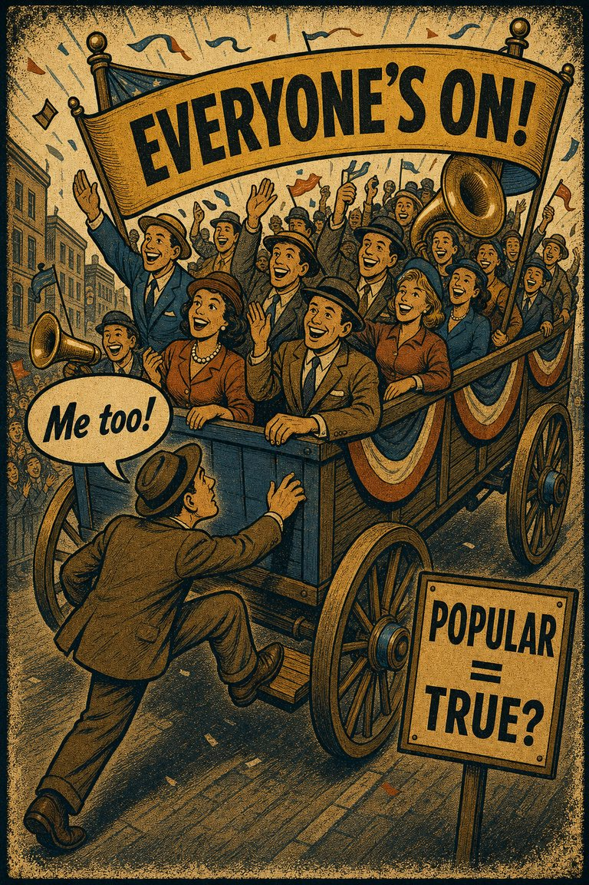
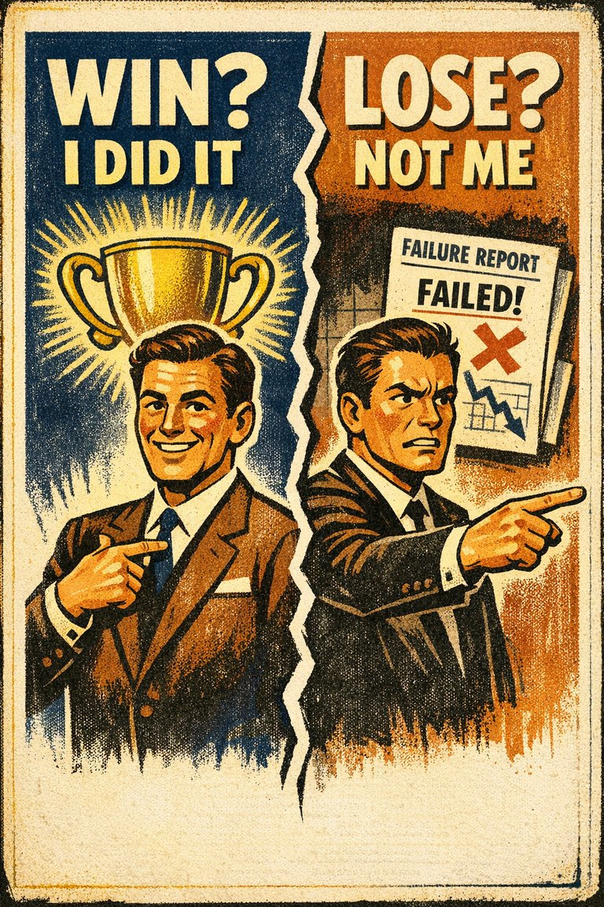

Groupthink
The tendency for groups to preserve harmony, cohesion, or momentum at the cost of critical evaluation and live dissent.
Hypothesis AssessmentAssociationTeams & managementPolitics & institutions

Cognitive Biases
A practical cognitive-bias site with clear definitions, learning paths, assessments, self-audits, and debiasing tools.
Applied Context
A hub for rooms where agreement, hierarchy, speed, and social comfort can quietly replace independent judgment.
Use this hub before decisions, retrospectives, hiring discussions, strategy reviews, or any meeting where the group feels settled too quickly.
Is the room converging because the case is strong, or because dissent has become socially expensive?
These are the entries most likely to matter in this domain. Use the cluster to compare nearby pulls before choosing a label.
The tendency for groups to preserve harmony, cohesion, or momentum at the cost of critical evaluation and live dissent.

The tendency to give excess weight to the opinion of a high-status or authoritative source independent of whether the source has earned that weight on the specific issue.

The tendency to over-report socially approved attitudes or behaviors and under-report the ones likely to invite embarrassment, judgment, or sanction.

The tendency to overestimate how many other people share one's own beliefs, preferences, habits, or reactions.

The tendency for group members to spend more time and energy discussing information that all members are already familiar with (i.e., shared information), and less time and energy discussing information that only some members are aware of (i.e., unshared information)

The tendency to do (or believe) things because many other people do (or believe) the same. Related to groupthink and herd behavior

The tendency to prefer the current option, default, or inherited arrangement simply because it is the current option, default, or inherited arrangement.

The tendency for someone to act when faced with a problem even when inaction would be more effective, or to act when no evident problem exists

The tendency to take disproportionate credit for successes while locating failures in bad luck, unfair circumstances, or other people.

The tendency to judge the quality of a decision mainly by how things turned out rather than by the quality of the reasoning under the uncertainty that existed at the time.

The tendency to explain other people's behavior too quickly in terms of character while underweighting situational pressures and constraints.

The tendency for one salient positive or negative impression to spill over into unrelated judgments about a person, product, or institution.
The hub is meant to change the process, not just supply labels.
Have people write forecasts, concerns, and preferred options before the highest-status voice frames the room.
Give the most plausible dissenting case a scheduled turn even when the room already feels aligned.
In reviews, ask whether the decision process was good before deciding whether the result made it look good.
These are the closest learning paths and short self-checks for this context.
A path for the distortions that show up when agreement, status, loyalty, and fear of standing apart start doing cognitive work.
What changes in the reasoning once dissent becomes socially expensive?
Best for teams, classrooms, leadership groups, and politically charged conversations.
Biases that quietly bend choice, forecasting, escalation, and project planning when the future is still unresolved.
What makes a plan feel decisive before it is actually well-calibrated?
Best for managers, founders, operators, and anyone who makes plans under pressure.
A postmortem path for keeping the known result from rewriting memory, distorting blame, or laundering bad process through luck.
How does the known ending bend memory of what was knowable beforehand?
Best for retrospectives, debriefs, coaching, investing, and performance review.
A path for social perception, hiring, leadership, conflict, and the fast trait inferences people make about one another.
How do snap impressions about people become stronger than the evidence available?
Best for teams, educators, interviewers, and anyone doing evaluation of persons rather than objects.
A meeting and conformity check for consensus that may be social before it is evidential.
Question: Would I still hold this view if I had to write it down alone before hearing the room?
A quick pre-choice audit for defaults, sunk costs, anchors, and false certainty.
Question: Am I choosing the best forward-looking option, or the most comfortable inherited one?
A causation and evidence check for premature stories about why the outcome occurred.
Question: What part of this explanation is genuinely shown, and what part merely feels satisfying now that the ending is known?
A social-perception check for trait inflation, first impressions, and hidden asymmetry.
Question: Am I reacting to the person, to the situation, or to my own first-pass impression of the person?
Use these after you have written the concrete case clearly enough for a model to help widen the frame.
Use this when a team discussion seems to be converging fast and you want help separating real agreement from status pressure, premature harmony, or hidden dissent.
Use when: Paste the decision under discussion, who is in the room, the current lean, and any objections that have surfaced so far.
Analyze the situation below as a groupthink and meeting-pressure scan. Your tasks: 1. Restate the current decision and the room's apparent consensus. 2. Identify which voices, roles, or incentives may be shaping what people are willing to say. 3. Flag any signs of groupthink, authority bias, social desirability pressure, or false-consensus assumptions. 4. List the objections or alternatives that most need airtime before the discussion closes. 5. End with a cleaner meeting protocol for the next 15 minutes of discussion. Output format: ◉ Apparent consensus ◉ Social pressure risks ◉ Missing objections ◉ Better next-step meeting structure Situation: [PASTE THE MEETING CASE HERE]
Use this when a live decision feels urgent and you want the model to slow the structure of the judgment rather than merely justify a preferred option.
Use when: Paste the current decision, the options under consideration, and any real constraints or deadlines.
Analyze the decision below as a debiasing brief rather than as a recommendation memo. Your tasks: 1. Restate the decision in one sentence. 2. Identify which options are being compared, including the default or do-nothing option. 3. Flag any likely cognitive biases that may be distorting the choice. 4. For each flagged bias, explain exactly how it may be shaping the current judgment. 5. Provide a cleaner forward-looking evaluation of the options that ignores sunk costs and separates evidence from comfort. 6. End with three concrete questions the decision-maker should answer before committing. Output format: ◉ Decision restatement ◉ Likely biases at work ◉ Clean forward-looking comparison ◉ Questions before commitment Decision to analyze: [PASTE DECISION HERE]
Use this when you want one prompt that first produces a calibrated forecast and then sets up a cleaner later postmortem.
Use when: Paste the upcoming event, decision, project, or forecast target and include any historical comparison cases if available.
Build a two-part forecasting and postmortem aid for the situation below. Part A: Forecast now - Give a probability range or outcome range rather than a single-point answer. - Name the reference class or outside view. - List the main assumptions carrying the forecast. - Run a short premortem: imagine the forecast failed and list why. Part B: Preserve the record for later learning - Rewrite the forecast as a timestamped note that could be reviewed after the outcome. - List three things that should be judged as process quality later rather than judged by the final result alone. - End with a short reminder against hindsight bias and outcome bias. Situation: [PASTE PROJECT, EVENT, OR FORECAST TARGET HERE]
These cases are pulled from the linked bias pages so the hub stays connected to concrete examples.
Wins are often explained as proof of preparation, grit, or talent, while losses are more easily framed as officiating, weather, or unlucky breaks.
Why it fits: The explanatory burden shifts with ego value rather than staying stable across outcomes.
Wikipedia · Modern examples
Research tied to halo effect repeatedly shows that visual attractiveness can inflate judgments about unrelated traits such as intelligence, warmth, or credibility.
Why it fits: One socially potent cue begins licensing a much wider verdict than it deserves.
Wikipedia · Modern social psychology
Janis used the Bay of Pigs decision process as a major example of cohesive groups suppressing dissent and overvaluing apparent consensus.
Why it fits: Group harmony and leadership pressure can make a plan feel more settled than the evidence warrants.
Victims of Groupthink · 1972
The action-bias literature is often used to explain why leaders, coaches, and managers prefer visibly doing something in crises even when restraint or more diagnosis would likely produce the better expected result.
Why it fits: The defensibility of motion becomes part of the decision rule, independent of whether motion improves the outcome.
Wikipedia · Modern decision contexts
Baron and Hershey showed that people rated the quality of decisions differently depending on the known outcome, even when the decision process was held constant.
Why it fits: The result contaminates evaluation of the process that produced it.
Journal of Personality and Social Psychology · 1988
Bandwagon effects are often discussed where visible growth in support creates more support simply because the growth is visible.
Why it fits: The popularity signal itself becomes one of the main causal drivers of later preference.
Wikipedia · Modern politics and markets
A short trail into the research behind the most central bias pages in this domain.
Janis's original formulation of the concept, its symptoms, and the policy fiasco examples that made it durable.
Milgram's obedience work is a strong anchor for the social power of perceived authority, even when the page frames the issue as judgment rather than obedience alone.
The classic measurement source behind social-desirability response tendencies in self-report.
The defining paper for overestimating how widely one's own choices and views are shared.
A classic source for preferences that change because other people are visibly choosing or valuing something.
The flagship demonstrations of how inherited options gain extra pull simply by already being in place.